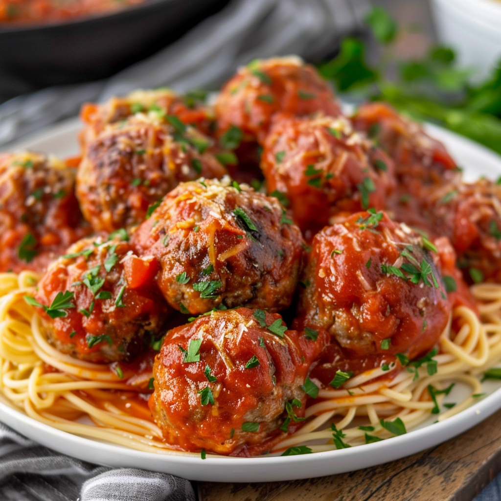

Grandma's Italian Meatballs

Ingredients
For the Meatballs:
- 1 pound ground beef (mix of beef and pork recommended)
- 1/2 cup breadcrumbs
- 1/4 cup grated Parmesan cheese
- 1/4 cup fresh parsley, finely chopped
- 2 garlic cloves, minced
- 1 large egg
- 1 teaspoon salt
- 1/2 teaspoon ground black pepper
- 1/2 teaspoon dried oregano
- 1/4 teaspoon red pepper flakes (optional)
For the Sauce:
- 2 tablespoons olive oil
- 1 small onion, finely chopped
- 2 garlic cloves, minced
- 1 (28-ounce) can crushed tomatoes
- 1 teaspoon sugar
- 1 bay leaf
- Salt and pepper to taste
- Fresh basil leaves, for garnish
Instructions
-
Combine all meatball ingredients in a large bowl. Mix until just
combined, then form into 1.5-inch meatballs. Chill for 30 minutes.
-
In a large skillet, brown the meatballs in batches. Set aside.
-
In the same skillet, cook the onion and garlic, then add tomatoes,
sugar, and bay leaf to make the sauce.
-
Add the meatballs back to the skillet, cover, and simmer for 25-30
minutes.
- Serve hot, garnished with fresh basil.